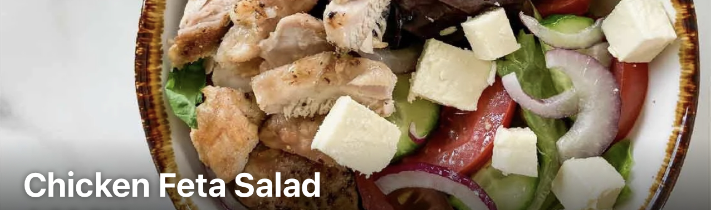

Description
A tasty and protein-packed salad.
Ingredients
- 169g Chicken thigh
- 52g Lettuce
- 63g Cucumber
- 63g Tomato
- 38g Red Onion
- 50g Feta cheese
- 38g 26g Olive oil
Steps
- Wash and prep the salad.
- Use lettuce as the base then top with sliced cucumber, onion and tomato.
- Pan-fry the slice chicken breast with herbs until cooked through.
- Top salad with chicken and then drizzle olive oil as the dressing. Amazing.
-
Tip: If you are short for time you can replace fresh chickenwith pre-cooked deli Tegalroast
chicken meat. Optional Seasoning - sprinkle over some fresh herbs or lime juice to serve.